공식 한국어 발매일 발표 이미지
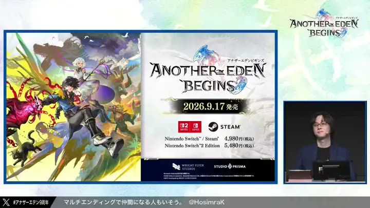
방송 중 발매 정보 슬라이드
트레일러 PV (12:00~19:45)
프로듀서 히라사와(スタジオプリズマ代表): "10년째 시작에 걸맞은 영상을 준비했습니다"
시대 소개
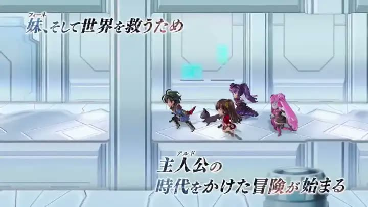
妹、そして世界を救うため、主人公の 時代をかけた冒険が始まる
"여동생, 그리고 세계를 구하기 위해 — 주인공의 시대를 건 모험이 시작된다"
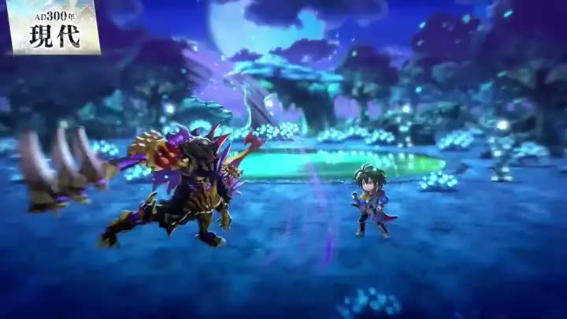
AD 300년 / 현대
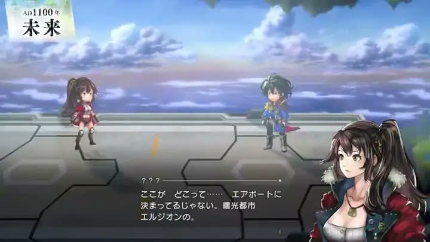
AD 1100년 / 미래
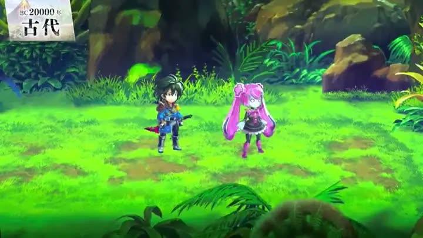
BC 20000년 / 고대
전투 시스템 미리보기
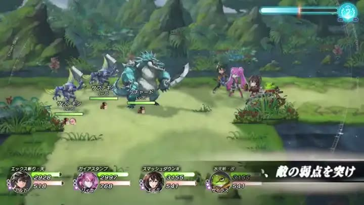
Chain Skill — 적의 약점을 찔러라
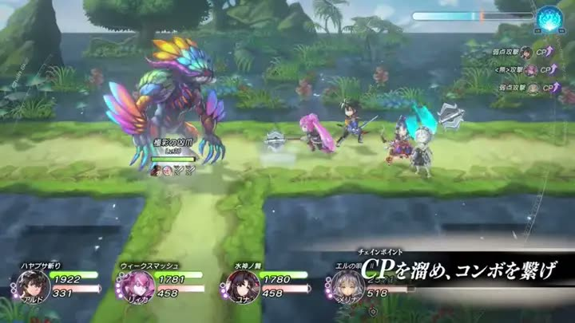
CP를 모아 콤보를 이어라
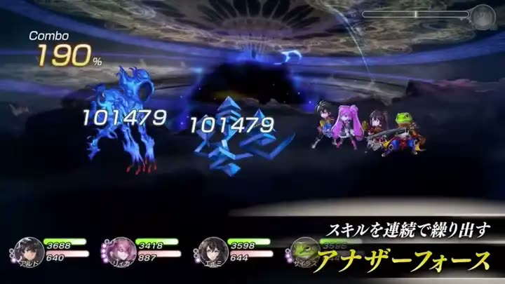
アナザーフォース / Combo 190% / 101,479ダメージ
어나더 포스 — 콤보 190%, 10만 오버 대미지. "스킬을 연속으로 펼쳐라"
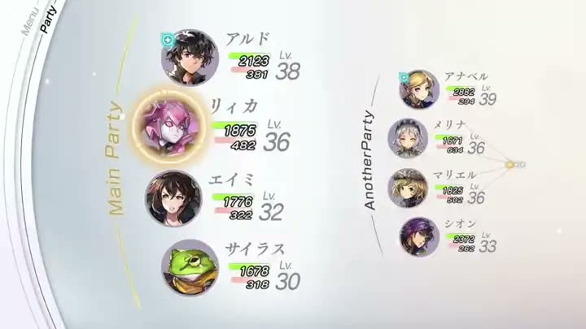
8인 동시 편성: 메인 파티 4인(알드/리이카/에이미/사이라스) + 어나더 파티 4인(아나벨/메리나/마리엘/시온)
캐릭터 소개
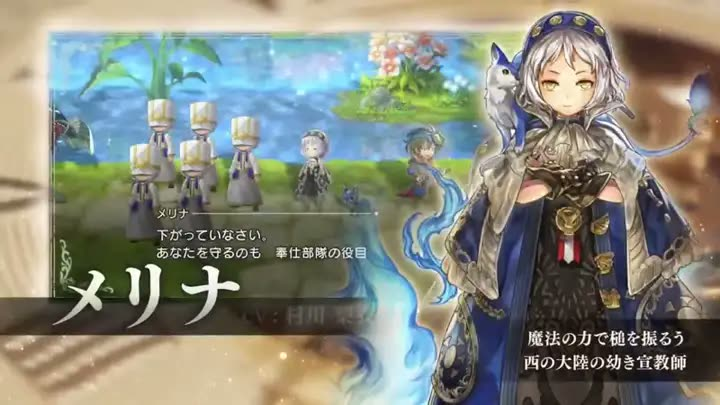
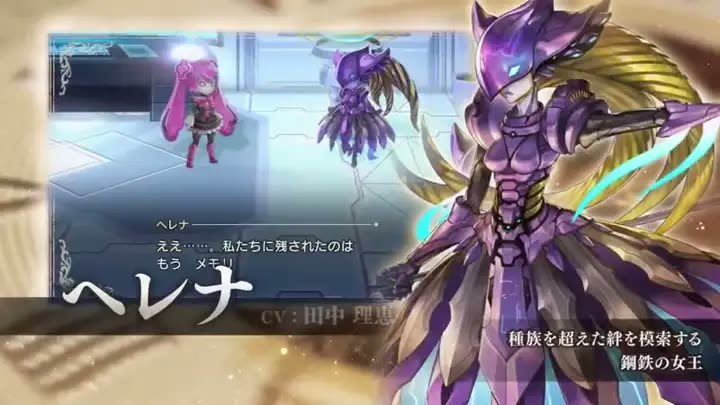
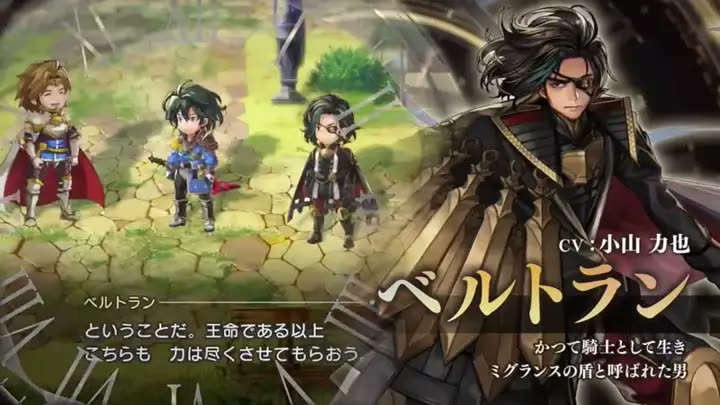
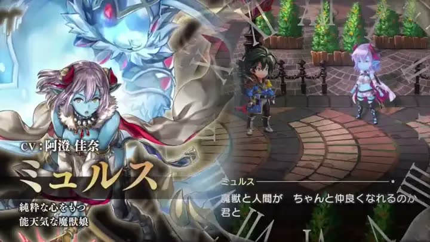
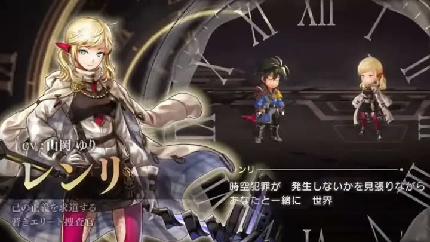
키 비주얼
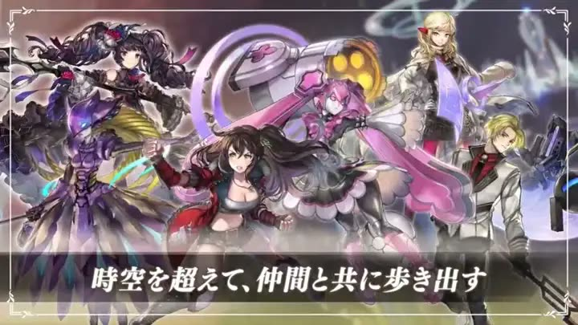
「時空を超えて、仲間と共に歩き出す」
"시공을 초월하여, 동료와 함께 걸어나간다"
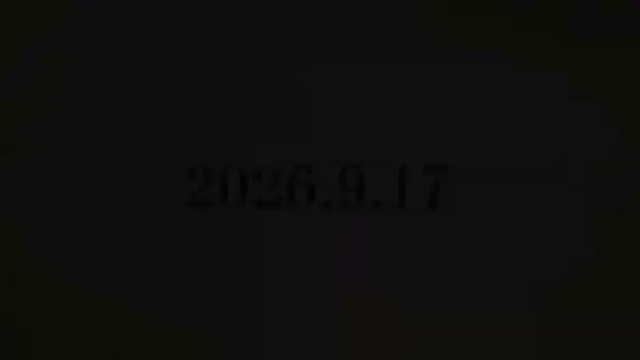
2026.9.17 — 발매일 공개 순간
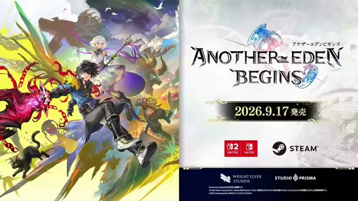
ANOTHER EDEN BEGINS / 2026.9.17 / Switch / Steam
개요 소개
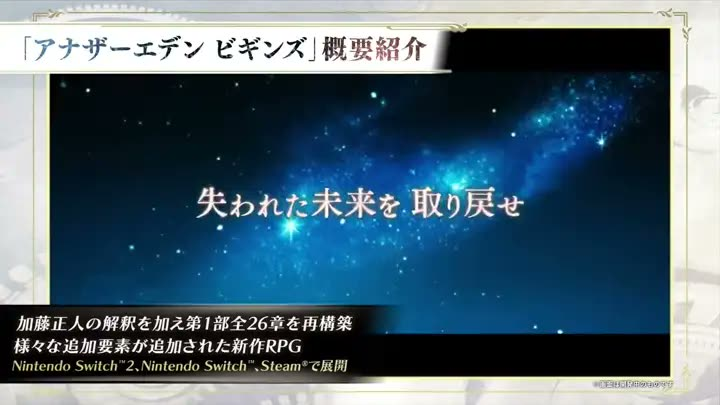
失われた未来を取り戻せ / 加藤正人の解釈を加え第1部全26章を再構築
"잃어버린 미래를 되찾아라" — 가토 마사토의 재해석으로 제1부 전 26장 재구축. 다양한 추가 요소가 포함된 신작 RPG.
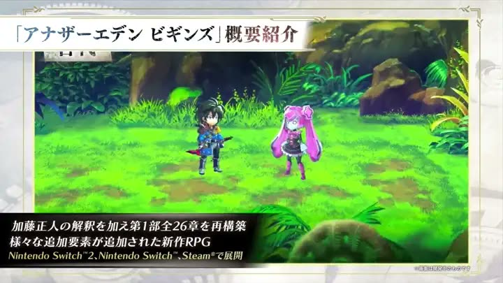
리뉴얼된 필드 탐험
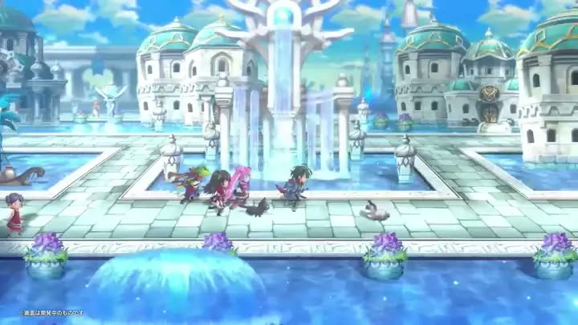
도시/광장 파티 이동
캐치카피: 「君が綴る、新たな始まり」 — "네가 엮어가는, 새로운 시작"
배틀 시스템
심볼 인카운터
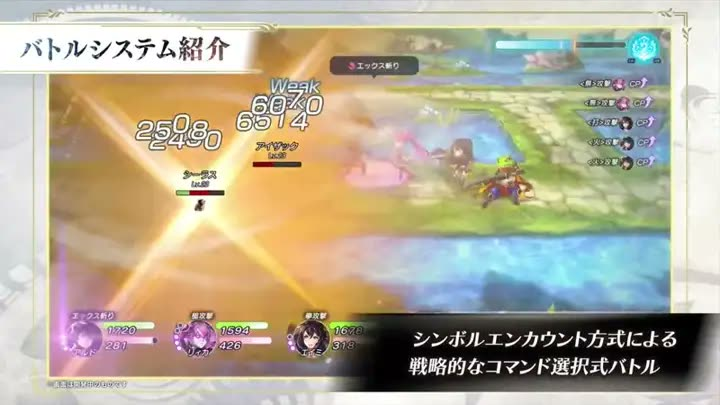
シンボルエンカウント方式による戦略的なコマンド選択式バトル
"심볼 인카운터 방식의 전략적 커맨드 선택형 배틀" — Weak 히트 시 대미지 증가.
체인 스킬
개발자: "4개 스킬에 더해 체인 스킬 설정 가능. CP가 쌓이면 자동 발동. 파티 멤버가 비속성 공격을 해도 CP가 쌓입니다."
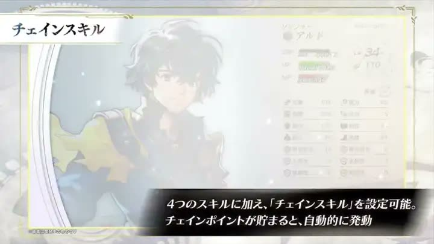
ソルジャー アルド Lv.34 / チェインポイントが貯まると自動的に発動
솔저 알드 Lv.34. "4개 스킬에 더해 체인 스킬 설정. CP가 모이면 자동 발동."
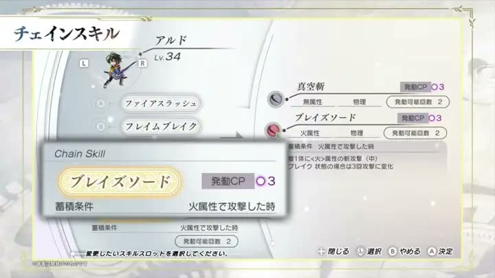
ブレイズソード: 発動CP 3, 火属性で攻撃した時. ブレイク状態で3回攻撃に変化
블레이즈소드: CP 3 소모, 불꽃 속성 공격 시 축적. 브레이크 상태면 3회 공격!
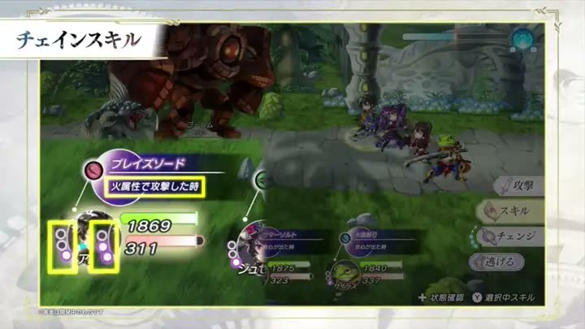
"복수 캐릭터가 동시에 조건 충족 시 연쇄 발동. 파티 편성으로 연속 공격 파티 구성 가능."
버리어블 체인지 / 어나더 포스 / 어빌리티 트리
전투 중 파티 교체 + 즉시 체인지 스킬 발동.
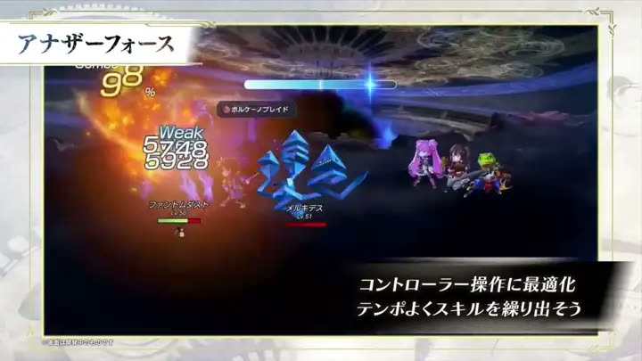
어나더 포스 — 컨트롤러 최적화
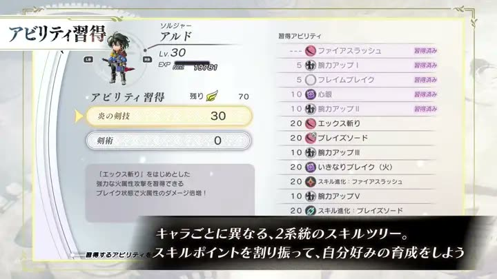
2계통 스킬 트리 (불꽃의 검기/검술)
캐릭터마다 2계통 스킬 트리. 스킬 진화: 파이어 슬래시 → 블레이즈 소드.
뉴게임+ 신규 동료
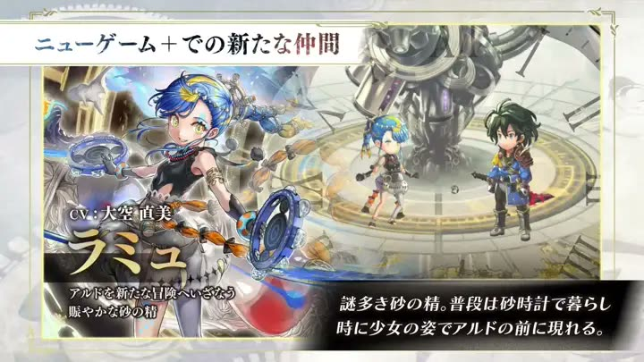
CV: 大空直美 (오오조라 나오미) | ビギンズ 전용 동료
謎多き砂の精。普段は砂時計で暮らし 時に少女の姿でアルドの前に現れる。
수수께끼 많은 모래의 정령. 평소 모래시계 속에서 살며 때로 소녀의 모습으로 알드 앞에 나타난다.
가격 및 에디션
| 에디션 | NS2 | NS / Steam |
|---|---|---|
| 기본판 | 5,480엔 | 4,980엔 |
| コレクションボックス 소프트+OST+SteelBook+삼방배BOX | 10,480엔 | 9,980엔 |
| スペシャルコレクションボックス 위+나이프+핀뱃지3종+북클릿 (수량한정) | 20,480엔 | 19,980엔 |
시리얼 코드 — 모바일 연동

공식 한국어 시리얼 코드 안내
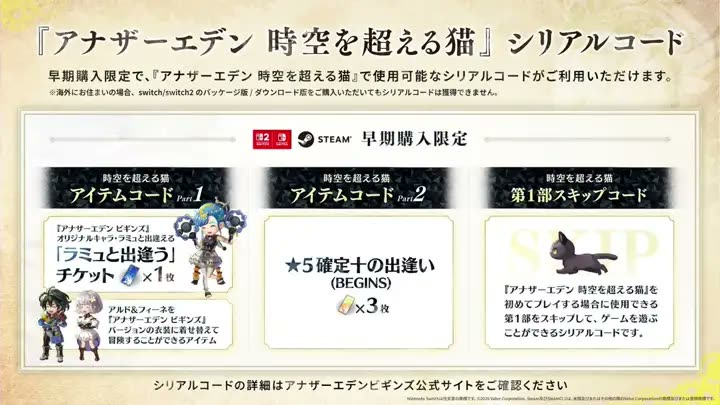
| 아이템 Part1 | 라뮤 만남 티켓 x1 + 알드&피네 비긴즈 의상 |
| 아이템 Part2 | ★5 확정 십연 (BEGINS) x3회분 |
| 1부 스킵 코드 | 모바일판 1부 스킵 가능 |
해외 거주자는 Switch/Switch2 구매 시에도 시리얼 코드 획득 불가
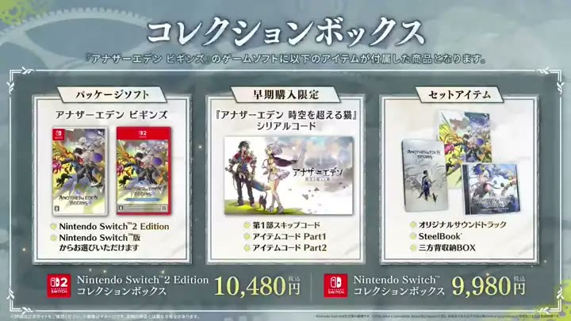
コレクションボックス
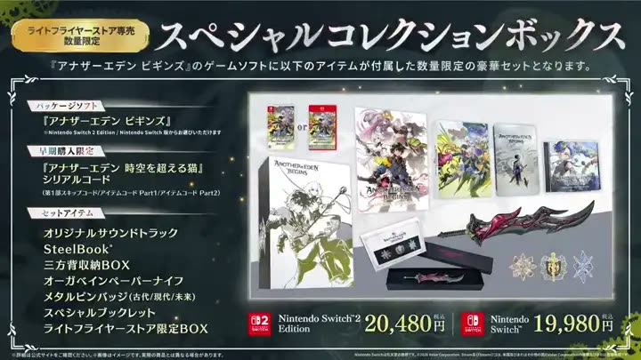
スペシャル (수량한정)
한줄 요약
「アナザーエデン ビギンズ」 — 가토 마사토의 재해석으로 제1부 26장 재구축. 2026.9.17 NS2/NS/Steam 발매. 19명 플레이어블 캐릭터, 10개 이상 멀티엔딩. 체인 스킬, 버리어블 체인지, 2계통 스킬 트리, 8인 파티 등 신규 시스템. 뉴게임+ 전용 캐릭터 ラミュ(모래의 정령) 추가. 모바일 연동 시리얼 코드(★5 확정 x3, 라뮤 티켓) 포함.